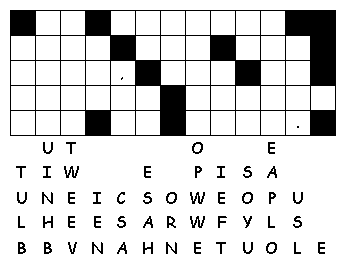
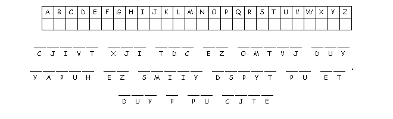

This week's lessons: 1 Kings 2:10-12; 3:3-14 and Psalm 111 or Proverbs 11:1-6 and Psalm 34:11-14 Ephesians 5:15-20 John 6:51-58
Middle-School Pew-work
|
1 Wisdom hath builded
her house, she hath hewn out her seven pillars: |
3 She hath sent forth
her maidens: she crieth upon the highest places of the
city, |
5 Come, eat of my
bread, and drink of the wine which I have mingled. |
The author of this passage is imagining what “Wisdom” would be like, if Wisdom were a person. How would you describe “Wisdom”? You can use a metaphore, as the author of this passage did, or you can use a literal explanation:
_____________________________________________________________________________
_____________________________________________________________________________
_____________________________________________________________________________
_____________________________________________________________________________
_____________________________________________________________________________
_____________________________________________________________________________
_____________________________________________________________________________
_____________________________________________________________________________
|
|
 |
|

Next
Week:1
Kings 8:(1,6,10-11), 22-30, 41-43 and
Psalm
84 or Joshua
24:1-2a, 14-18 and
Psalm
34:15-22, Ephesians
6:10-20, John
6:56-69